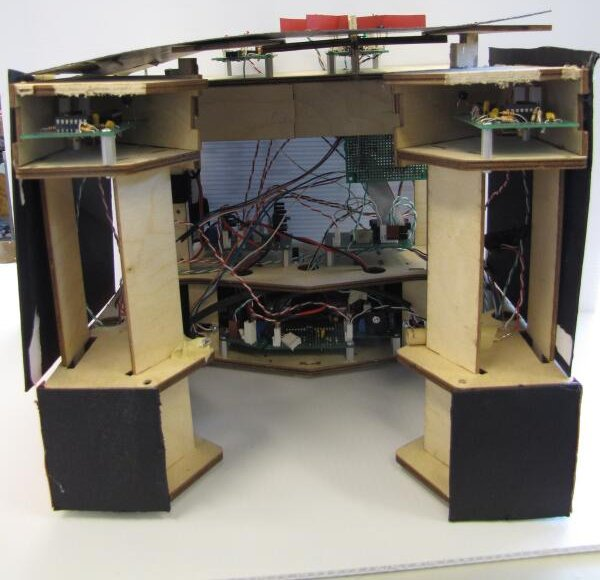

Mechanical Design
Below are descriptions, pictures and models of the key mechanical parts of our robot. For a zip of all of the SolidWorks files, click here.
Catcher
The catcher is designed to hold three flags in nearly a straight line. The slant at the front helps funnel the flags into the entrance. Once the flag enters the catcher, it hits the point at the back. Since this position is unstable, the flag rolls to one side or another and settles in that corner. The second flag rolls to the other corner. The third flag rests in the middle because the presence of the other two flags has made that position stable. When all three flags are in the catcher, they fit within the 6" width of the goal zone. An IR emitter and detector are located on opposite sides of the gate in order to detect when a flag has passed through. Tape sensors are positioned in the front and back of where the flags rest in the catcher in order to detect when all of them are in the goal zone.
Drive Train
The wheels are powered using direct drive. The motor has a 64:1 gearhead, which is attached to a spider coupler to prevent putting a radial load on the gearhead/motor. The shaft attached to the spider coupler is press fit into the wheel and passes through two sleeve bearings in pillow mounts. Encoder wheels are attached to the shafts between the spider coupler and the first bearing.
Beacon Sensing
The robot had two sets of IR beacon sensors: one to detect the flags, and one to detect the corner beacons.
The flag sensors are positioned on either side of the catcher entrance, pointing forward and slightly inward. Because the sensors are so far apart, in order for them to sense flags directly in front of the robot, they have to be pointed inwards. Shielding on the top and sides prevent the sensors from picking up signals from the corner beacons or other flags. Because of the catcher entrance, the sensors have to be positioned so far away from the center of the robot, however this introduces a number of problems for guiding the robot towards a flag. There is no inner shielding because it would prevent the sensors from seeing a flag directly in front of the robot, but it means that a sensor can pick up a flag signal, even if the flag is on the opposite side from the sensor. When making the flag-following control law, we had to be very careful about using the sensor readings to determine the location of the flag.
The corner sensors are at the top of the robot pointing to the corners of the robot. This orientation means that when a sensor picks up a corner signal, the robot will be pointing at the wall, not at the corner. There is shielding around the sensors, as well as beneath them, in order to prevent detection of flag and other corner signals.
Structural Support
In order for our catcher to hold three flags within the 6" width of the goal region, the side walls at one point are very thin. In order to prevent the front half of the robot from breaking off from the back half (or wobbling too much), we added thin aluminum plates to the sides.